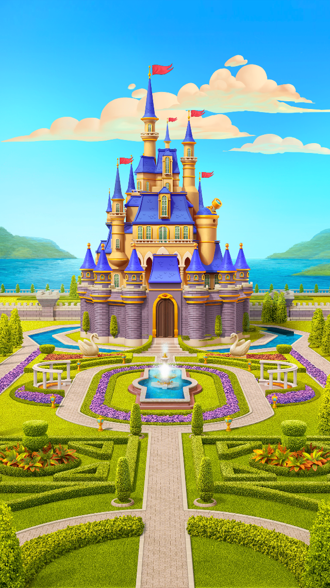
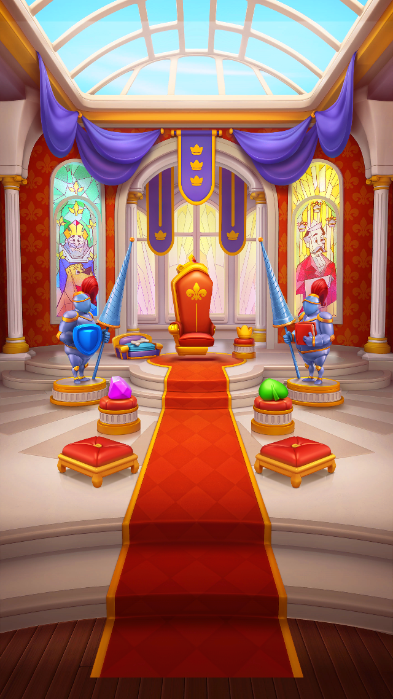
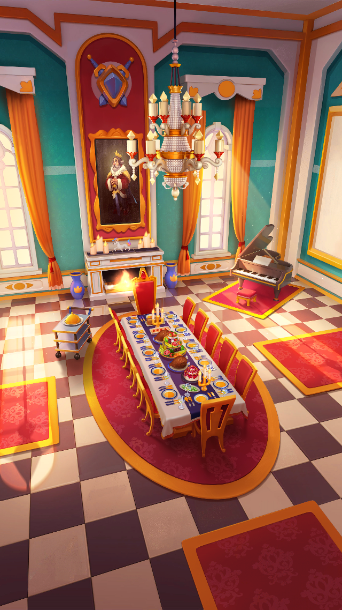
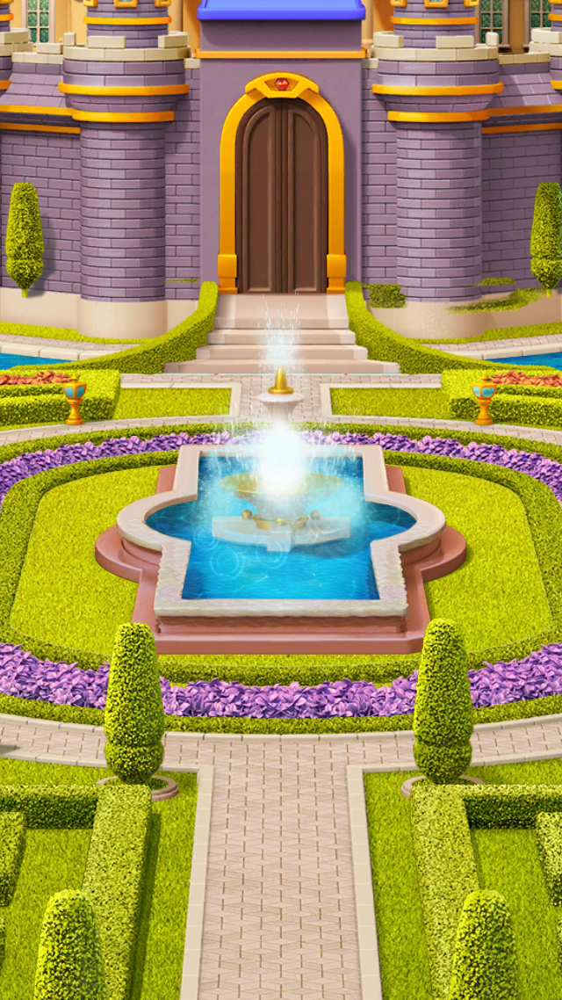

Royal Throne
Three areas · Layered reveals · Flowing water · Enhanced fountain
Captured in Unity at 30 fps. The review video is silent; the game includes reveal sounds and ambience.

Castle Gardens
Throne Room
Royal Dining Room
Refined fountain spray